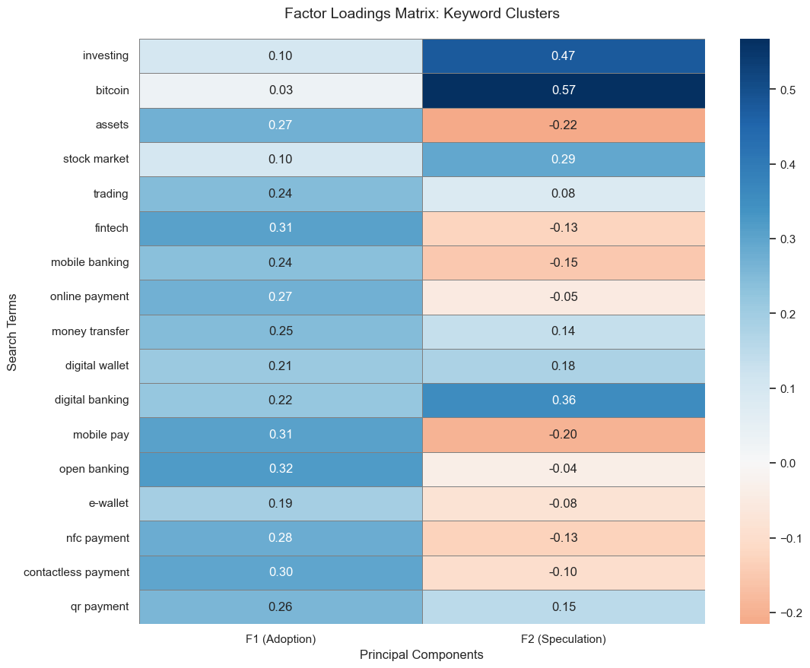
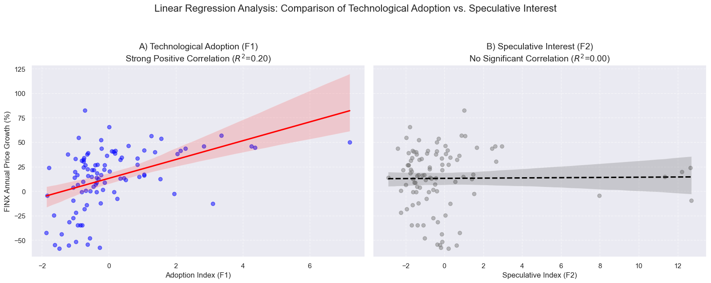
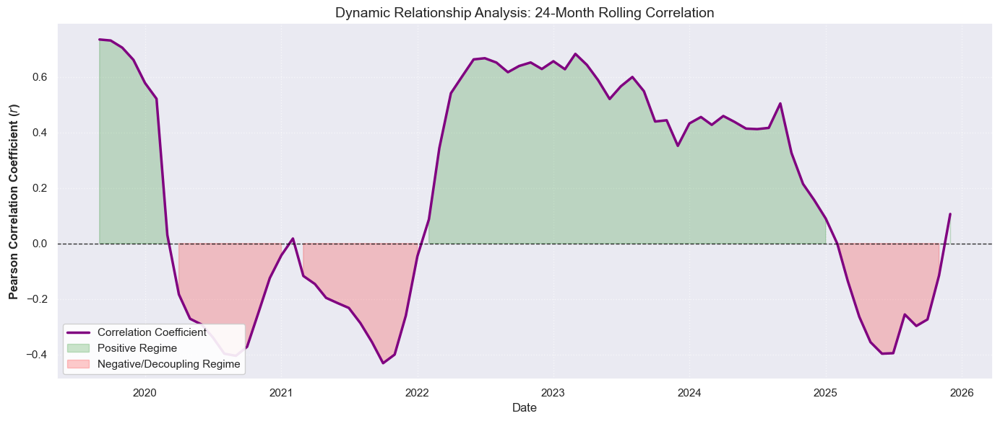
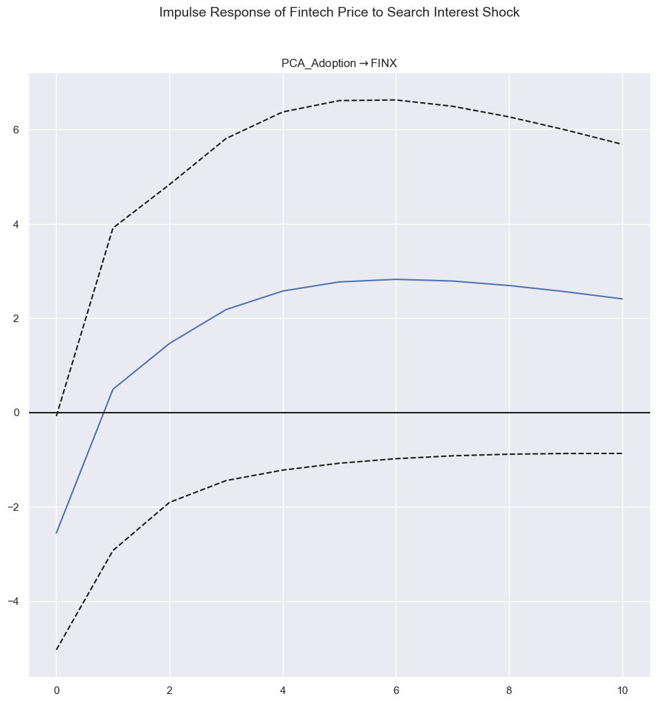
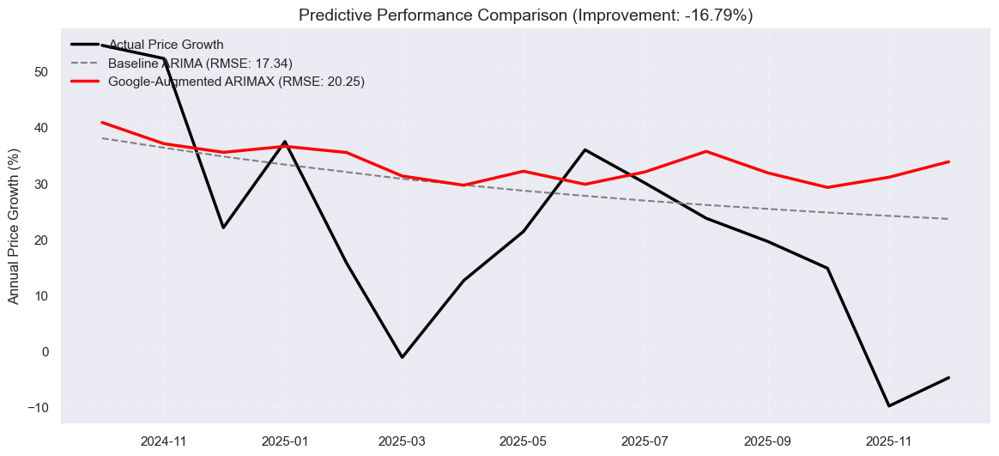
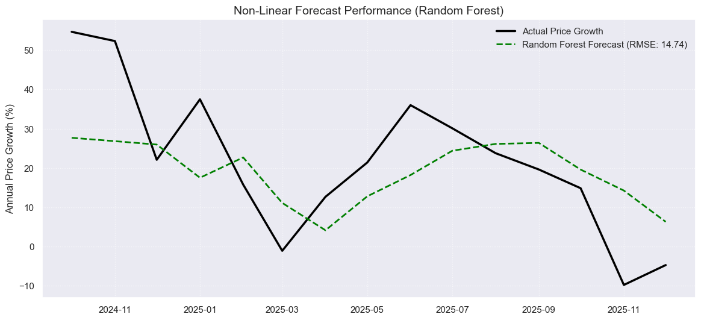
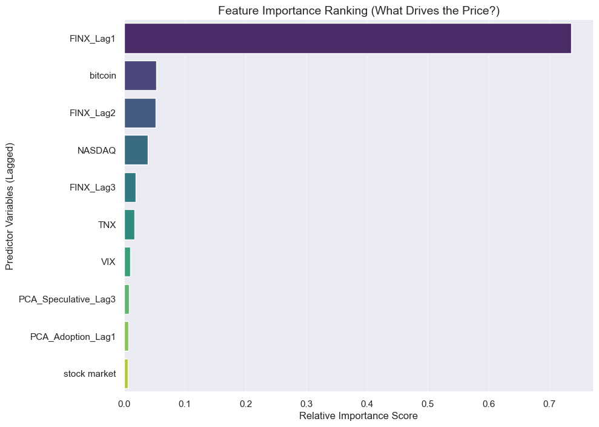

Google Search Interest & Fintech Sector Growth
Can Google search behavior causally explain and predict fintech sector growth?
Project Overview
This project investigates whether Google search interest can act as a leading indicator for growth in the fintech sector. The analysis combines econometric methods and machine learning models to examine both causal and predictive relationships.
- Target Variable: Global X Fintech ETF (FINX)
- Data: Google Trends, FINX, NASDAQ, VIX, 10Y Treasury Yield
- Frequency: Monthly (2016–2025)
Dimensionality Reduction with PCA
Seventeen fintech-related Google search terms were reduced into meaningful indices using Principal Component Analysis (PCA).

PCA reveals two dominant components: Technological Adoption and Speculative Interest.
Linear Impact Analysis
OLS regression shows that technological adoption searches have a strong and statistically significant positive impact on fintech price growth, while speculative searches are insignificant in a linear framework.

Search Interest and Price Co-Movement
Search interest and fintech prices exhibit strong co-movement, particularly during boom and contraction periods.

Time-Varying Relationship
A rolling correlation analysis reveals that the strength of the relationship is not constant, indicating regime-dependent dynamics.

Granger Causality & Impulse Response
Granger causality tests confirm that technological adoption searches lead fintech prices by 1–2 months. Impulse response analysis shows persistent effects lasting up to 6 months.

Limits of Linear Forecasting
Incorporating Google Trends into an ARIMAX model worsens forecast accuracy, highlighting the inability of linear models to capture complex market dynamics.

Non-Linear Modeling with Random Forest
A Random Forest model captures non-linear interactions and improves forecast accuracy by approximately 27%. Feature importance analysis highlights the role of speculative searches during extreme market conditions.


Conclusion
Google search behavior contains meaningful short-term signals for fintech sector growth. While linear models fail to capture this complexity, non-linear machine learning methods successfully exploit these patterns.